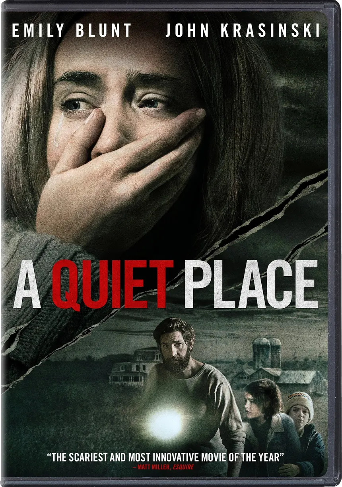

Notable Critic Reviews
A movie wouldn’t be a movie without its critics! Some notable critics who spoke highly of A Quiet Place include Stephen King (the King of Horror himself) and Michael Phillips (Long Time Film Critic and writer for the Chicago Tribune). Stephan King, a writer who doesn’t share his praises easily, shared his opinion with Variety and Twitter around the time the movie was released in 2018. He went on to explain how certain parts of the movie grabbed his attention, like how barnyard doors being wrapped in foam, the sand paths the characters had to walk on to say quiet, and even to a snack display that was not touched by the characters in the general store, showing eating specific snacks in this movie could end up with you being hunted by the Death Angels. On Twitter, he praised the film, saying it was extraordinary, with terrific acting, but it was the silence of the movie that captivated him. Michael Phillips, a long-time film critic and writer for the Chicago Tribune, ranked the film 2.5 out of 4 stars in his review, but not without highlighting and noting what he didn’t like about the movie. In his review, he highlighted a scene in the film where Regan encounters one of the Death Angels within the cornfield, near the farmhouse where the family lives, remarking on how the imagery, suspense, and sounds worked together amazingly to create such a tense scene. He did note that the tension in the movie is excellent, but it lacked a rewarding ending, leaving the audience feeling ‘emotionally unsatisfied’.
Notable Critics (who reviewed the movie)
- Stephen King: (The King of Horror; Author)
- Michael Phillips (Longtime Film Critic; Writer)
- Ty Burr (Honorable Mention - Highly respected film critic)
- Richard Roeper (Honorable Mention - Career film critic)
Links to Stephan King's, Tyler Burr's, and Richard Roeper's Reviews (for your viewing and reading pleasure!)
Fan Reviews
What do the fans of the movie have to say? I have reviewed various fan reviews on the film from Reddit, Twitter, and Rotten Tomatoes, taking note of the mentions that occurred most frequently. Fans of the film have widely supported A Quiet Place for its unique take on how silence is the only way to survive in an alien-threatened apocalypse, but they also appreciate it for its gripping experience. One of the most frequently mentioned aspects of the movie by fans is their experience of seeing it in theaters. The lack of dialogue within the film, as it played in the theater, created a sense of tension shared among the viewers, all of whom instinctively stayed quiet and afraid to open their snacks to enjoy or make any noise at all during the most intense scenes of the movie. Some fans have mentioned the sound design of the film, giving it high commendation. Since the movie is relatively quiet (again, due to the lack of dialogue among characters), viewers get a sense of the commanding atmosphere that keeps the audience on edge until the end of the movie.
